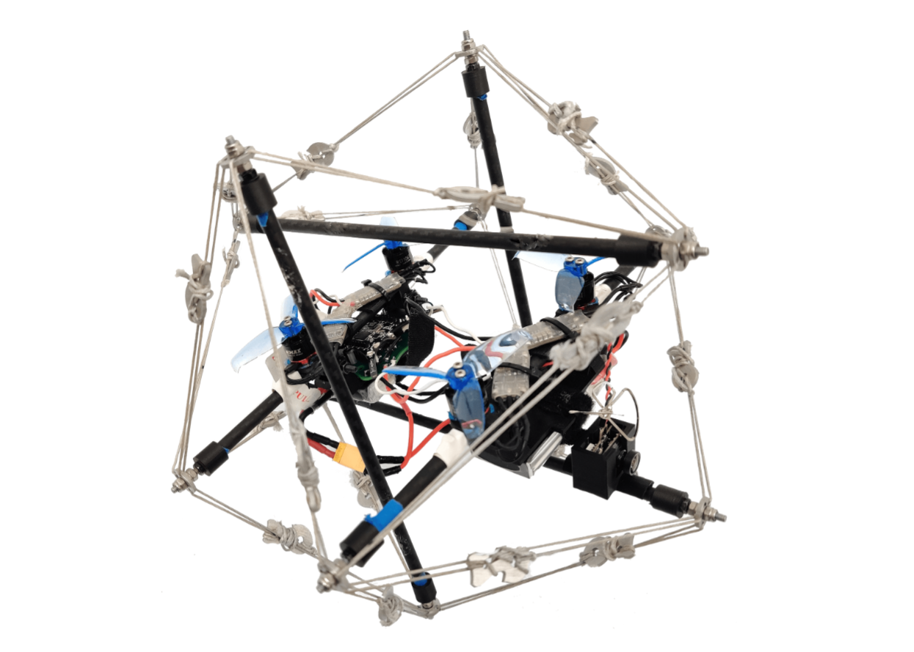
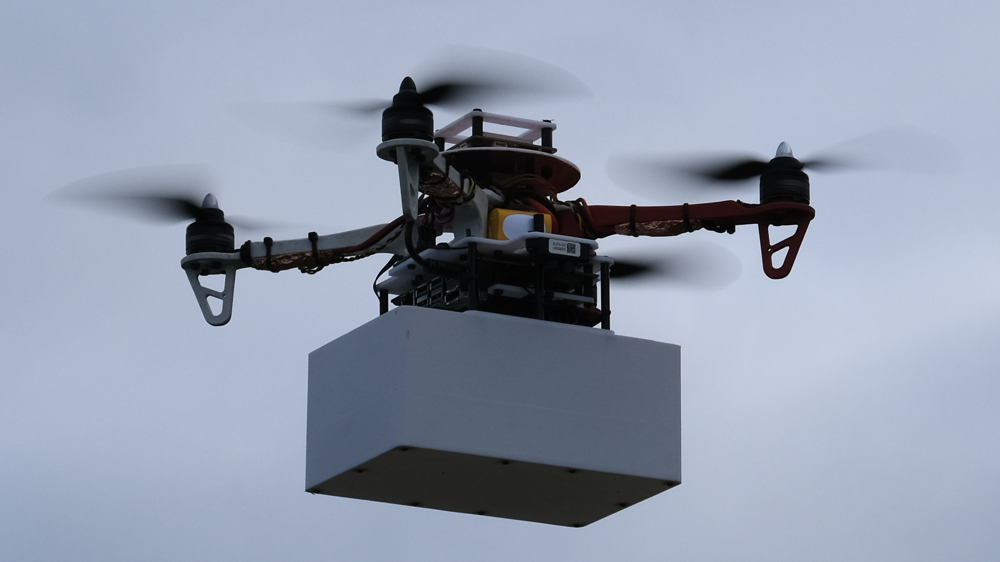
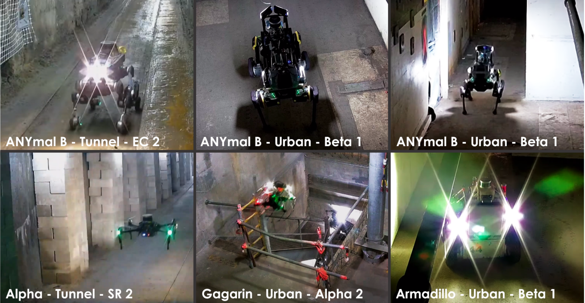
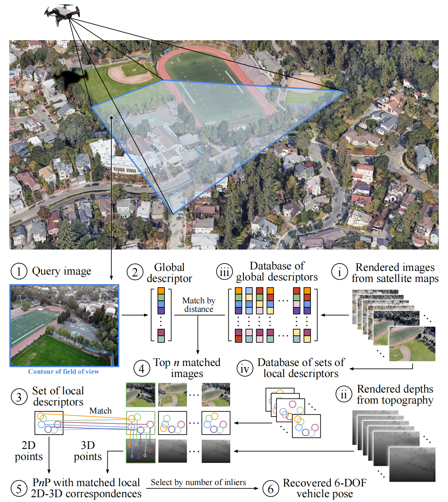
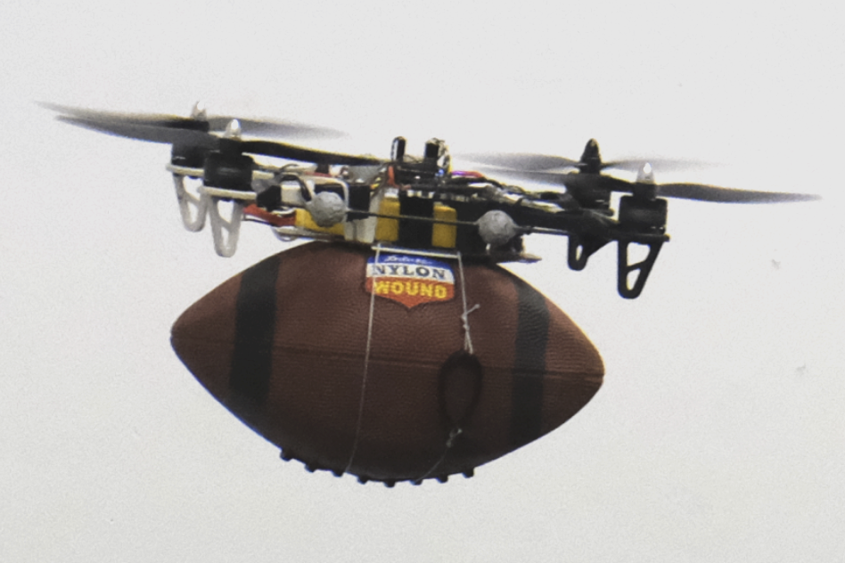
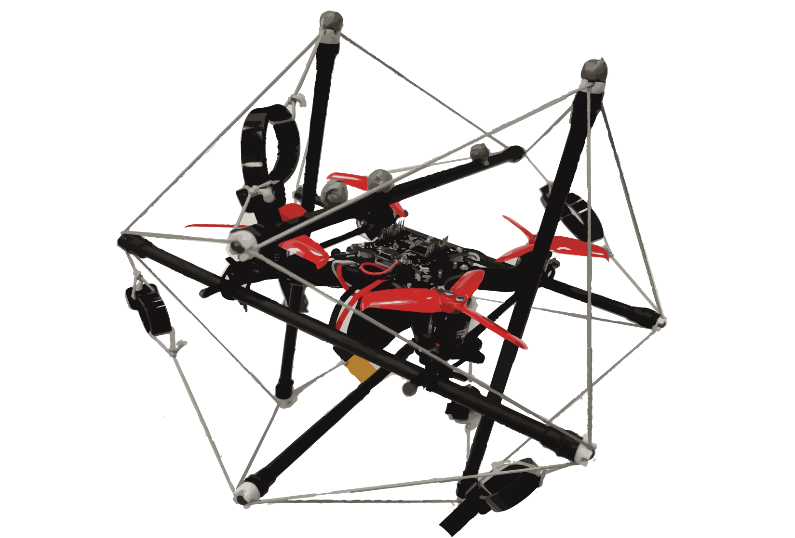
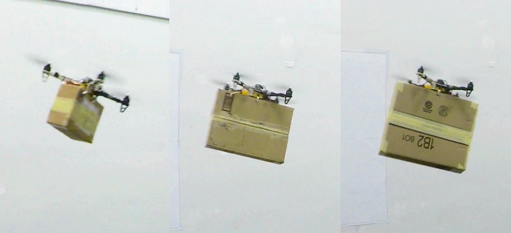
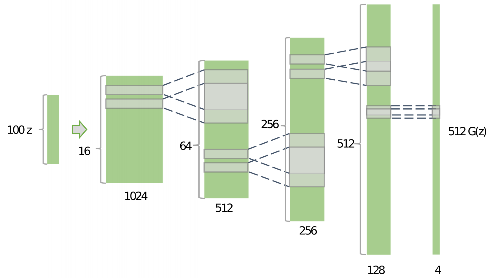
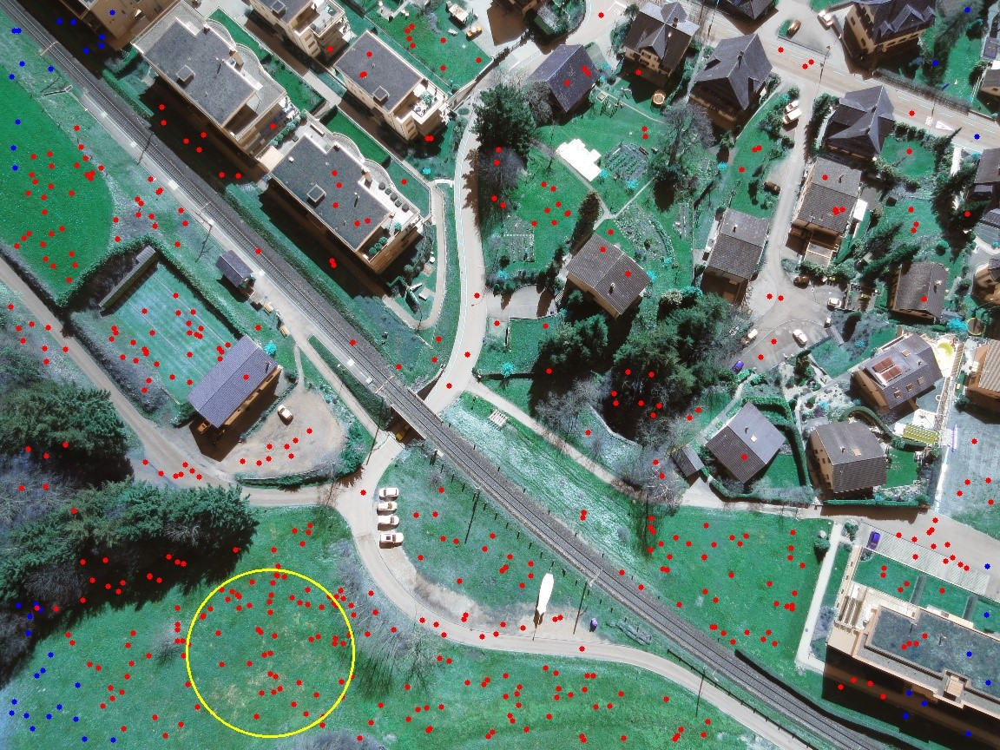

About Me
Hi! My name's Xiangyu Wu, a robotics researcher and engineer. I received my bachelor of science degree in vehicle engineering from Beijing Institute of Technology in 2017 and doctor of philosophy degree in Robotics from University of California, Berkeley in 2022. During my PhD study, I worked with Prof. Mark W. Mueller on the motion planning, control, state estimation and novel design of unmanned aerial vehicles. After graduation, I continue working on the research and development in robotics, focusing on motion planning and control.
- Google Scholar: CLICK HERE
- Linkedin: CLICK HERE
- Email: CLICK HERE
Education
| University of California, Berkeley | Aug. 2017 - Jun. 2022 |
| Ph.D. in Robotics | GPA: 3.91/4.00 |
| Advisor: Prof. Mark W. Mueller | |
| Field: Unmanned Aerial Vehicles (UAVs), Path Planning, Control, State Estimation, Design |
| Beijing Institute of Technology | Sep. 2013 - Jun. 2017 |
| Bachelor of Science in Vehicle Engineering | GPA: 3.96/4.00 |
| Department of Mechanical Engineering | Ranking: top 1% |
Work experience
MotionalSoftware Engineer in Controls (Aug. 2023 - Present)
- Improve the lane change performance and safety of Motional's autonomous driving vehicle running on public roads in Las Vegas.
- Develop novel path planning and control methods for the autonomous driving vehicle to improve its handling of emergencies (e.g. harsh braking of leading vehicles, pop-up pedestrians).
Path planning Algorithm Engineer (Sep. 2022 - Dec. 2022)
- Improved the performance of the target localization and tracking modules, which enable the drone to track and take photos of the user-defined target autonomously.
- Upgraded the target localization and tracking modules from ROS1 to ROS2, optimized and deployed them on the latest drone model of Autel Robotics -- EVO MAX.
Graduate Student Researcher (May 2017 - Jun. 2022)
- Worked with Prof. Mark W. Mueller on the autonomy of aerial robots.
- Conducted research on the path planning, control, state estimation, and novel design of unmanned aerial vehicles (UAVs).
Technical Skills
- Programming: C++, Python, MATLAB, LabVIEW, LaTeX.
- Robotics: ROS1, ROS2, MPC, Nonlinear Controls, Kalman Filters, Path Planning, PX4, SLAM.
- Learning: TensorFlow.
- Modeling: AutoCAD, Solidworks, CATIA.
Honors and Awards
| Winner of the DARPA Subterranean Challenge (member of team CERBERUS) | 2021 |
| J.K. Zee Fellowship (UC Berkeley) | 2020 |
| Graduate Division Block Grant Award (UC Berkeley) | 2020, 2018 |
| Outstanding Graduate of Beijing | 2017 |
| Outstanding Graduate Award (Beijing Institute of Technology) | 2017 |
| Chinese National Scholarship | 2014 |
Publications
My research focuses on three main aspects:
- Autonomous navigation in unknown cluttered environments.
- Energy-efficient motion planning of aerial robots.
- State estimation / localization of aerial robots.
 |
Design, Modeling and Control of a Top-loading Fully-Actuated Cargo Transportation Multirotor
W. Park, X. Wu, D. Lee, S.J. Lee IEEE Robotics and Automation Letters (RA-L), 2023 Paper / Video |
|  |
Design and control of a collision-resilient aerial vehicle with an icosahedron tensegrity structure
J. Zha, X. Wu, R. Dimick, M. W. Mueller IEEE/ASME Transactions on Mechatronics, 2024 Paper / Video |
 |
Team CERBERUS Wins the DARPA Subterranean Challenge: Technical Overview and Lessons Learned
M. Tranzatto, M. Dharmadhikari, L. Bernreiter, M. Camurri, S. Khattak, F. Mascarich, P. Pfreundschuh, D. Wisth, S. Zimmermann, M. Kulkarni, V. Reijgwart, B. Casseau, T. Homberger, P. De Petris, L. Ott, W. Tubby, G. Waibel, H. Nguyen, C. Cadena, R. Buchanan, L. Wellhausen, N. Khedekar, O. Andersson, L. Zhang, T. Miki, T. Dang, M. Mattamala, M. Montenegro, K. Meyer, X. Wu, A. Briod, M. Mueller, M. Fallon, R. Siegwart, M. Hutter, K. Alexis submitted to Field Robotics Paper / Video |
 |
Zero-Shot Adaptive Quadcopter Controller
D. Zhang, A. Loquercio, X. Wu, A. Kumar, J. Malik, M .W. Mueller 2023 International Conference on Robotics and Automation (ICRA) Paper / Video |
 |
Perception-Aware Receding Horizon Trajectory Planning for Multicopters With Visual-Inertial Odometry
X. Wu, S. Chen, K. Sreenath, and M. W. Mueller IEEE Access ,2022 Paper / Video |
|  |
Model-free online motion adaptation for energy efficient flights of multicopters
X. Wu, J. Zeng, A. Tagliabue, and M. W. Mueller IEEE Access, 2022 Paper / Video / Code |
|  |
CERBERUS: Autonomous Legged and Aerial Robotic Exploration in the Tunnel and Urban Circuits of the DARPA Subterranean Challenge
M. Tranzatto, F. Mascarich, L. Bernreiter, C. Godinho, M. Camurri, S. Khattak, T. Dang, V. Reijgwart, J. L ̈oje, D. Wisth, S. Zimmermann, H. Nguyen, M. Fehr, L. Solanka, R. Buchanan, M. Bjelonic, N. Khedekar, M. Valceschini, F. Jenelten, M. Dharmadhikari, T. Homberger, P. De Petris, L. Wellhausen, M. Kulkarni, T. Miki, S. Hirsch, M. Montenegro, C. Papachristos, F. Tresoldi, J. Carius, G. Valsecchi, J. Lee, K. Meyer, X. Wu, J. Nieto, A. Smith, M. Hutter, R. Siegwart, M. Mueller, M. Fallon, and K. Alexis Field Robotics, 2022 Paper / Video |
|  |
Real-time Geo-localization Using Satellite Imagery and Topography for Unmanned Aerial Vehicles
S. Chen, X. Wu, M. W. Mueller, and K. Sreenath, IEEE/RSJ International Conference on Intelligent Robots and Systems (IROS), 2021 Paper |
 |
Autonomous flight through cluttered outdoor environments using a memoryless planner
J. Lee*, X. Wu*, S. J. Lee, and M. W. Mueller (*share the first authorship, alphabetical ordered.) International Conference on Unmanned Aircraft Systems (ICUAS), 2021 Paper / Video |
|  |
In-flight range optimization of multicopters using multivariable extremum seeking with adaptive step size
X. Wu and M. W. Mueller International Conference on Robotics and Automation (IROS), 2020 Paper / Video |
|  |
A collision-resilient aerial vehicle with icosahedron tensegrity structure
J. Zha, X. Wu, J. Kroeger, N. Perez and M. W. Mueller International Conference on Robotics and Automation (IROS), 2020 Paper / Video |
 |
Using multiple short hops for multicopter navigation with only inertial sensors
X. Wu and M. W. Mueller International Conference on Robotics and Automation (ICRA), 2020 Paper / Video |
|  |
Model-free online motion adaptation for optimal range and endurance of multicopters
A. Tagliabue, X. Wu, and M. W. Mueller International Conference on Robotics and Automation (ICRA), 2019 Paper |
|  |
Embedding Consequence Awareness in Unmanned Aerial Systems with Generative Adversarial Networks
G. Zhang, J. Alcala, J. Ng, M. Chen, X. Wu, M. W. Mueller and Y. Chen International Conference on Unmanned Aircraft Systems (ICUAS), 2019 Paper |
|  |
Towards a consequences-aware emergency landing system for unmanned aerial systems
X. Wu and M. W. Mueller International Conference on Unmanned Aircraft Systems (ICUAS), 2018 Paper |
Academic Services
Journal Reviewer- IEEE Transactions on Aerospace and Electronic Systems
- IEEE Robotics and Automation Letters (RA-L)
- IEEE Access
- Autonomous Robots (AURO)
- Nonlinear Dynamics
- Archive of Mechanical Engineering
- IEEE International Conference on Robotics and Automation (ICRA)
- IEEE/RSJ International Conference on Intelligent Robots and Systems (IROS)
- International Conference on Unmanned Aircraft Systems (ICUAS)
- ASME Dynamic Systems and Control Conference (DSCC)
- IFAC Symposium on Mechatronic Systems
- International Conference on Motion and Vibration Control